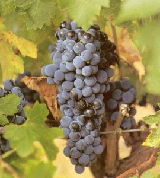

MERLOT
Descubre la Suavidad
Descubre la Suavidad
La variedad Merlot, célebre en todo el mundo por la sedosidad de sus vinos, encuentra en Cariñena un refugio cálido donde sus uvas adquieren una madurez excepcional. Es una cepa de brotación temprana y piel azulada profunda, lo que aporta color intenso a nuestros tintos.
Ofrecemos una expresión amable, redonda y sumamente frutal. Un vino pensado tanto para acompañar largas comidas como para disfrutarse solo, acariciando el paladar con su textura afelpada inconfundible.

Seducción intensa a copa parada
Notas jugosas y envolventes a ciruela negra, frambuesa y cereza que marcan el alma de la variedad.
Recuerdos cálidos que combinan el cacao puro y sutiles toques a trufa negra o setas propias del terruño.
Detalles mentolados o de laurel que le aportan frescura y profundidad, equilibrando su gran volumen en boca.
Gracias a su paso por barrica de roble, surgen agradables especias dulces y un ligero final tostado.
Características de origen y crianza
| Variedad | Merlot (Vitis vinifera) |
| Origen | Burdeos, Francia |
| Denominación | D.O. Cariñena, Aragón (España) |
| Vendimia | Manual, mediados de septiembre |
| Elaboración | Maceración tradicional y fermentación termocontrolada |
| Graduación | 13,5 – 14,5 % Vol. |
| Temperatura | Servir a 15 – 17 °C |
| Maridaje | Carnes asadas, pastas con salsas rojizas, vegetales a la parrilla y quesos semicurados |
Añade la elegancia frutal del Merlot a tu mesa desde nuestra tienda.
Ver en la Tienda →